全球数据中心建到哪一步了 美国 东南亚与中国的容量和项目地图
截至 2026 年 10 月 11 日。格洛可专题研究。
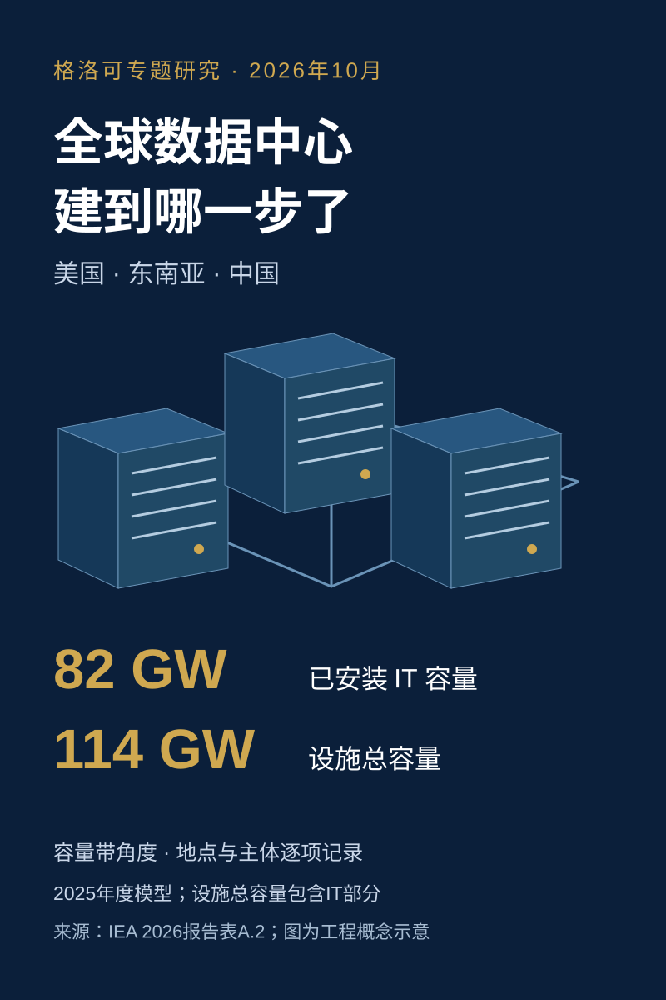
数据中心扩建已经进入按吉瓦讨论的阶段，但一座宣布建设的园区、一份电力接入申请和已经装好服务器的机房，代表三件不同的事。IEA 在 2026 年发布的模型估计，2025 年全球已经安装的 IT 容量为 82GW，包括冷却等设施功率的总容量为 114GW。新一轮扩建的规模很大，判断它能否落地，要进一步看每个项目处于哪一阶段、在哪里、由谁建设以及供谁使用。
本文分开讲美国、东南亚和中国的既有容量与建设管线，按公开资料截至日期核验主要项目。园区远期规划、实际已投运分期和发电设备容量分别记录；研究台账保留公司未披露的客户和容量空项。
第一章 全球已经装好了多少算力
2026年3月，Crusoe为微软宣布了得克萨斯州阿比林的新园区。公告同时披露900MW现场发电设施，以及两栋各具336MW设计关键IT负载的数据中心。本文将发电规模与合计672MW的设计IT容量分别记录。同一个项目里，电厂与机房描述的是不同的能力。
全球数据中心到底有多少GW，需要先确定我们要数的是已经安装的设备、机房能够容纳的设备，还是供电系统的规模。本文同时记录IT设备和基础设施两个角度，有任一角度的可靠数字就保留，角度暂不明确时保留原文。1GW等于1000MW，也就是100万千瓦。IT容量包括服务器、存储和网络设备；总设施功率还要承担冷却、供配电损耗、照明等负荷。二者不能直接相加。
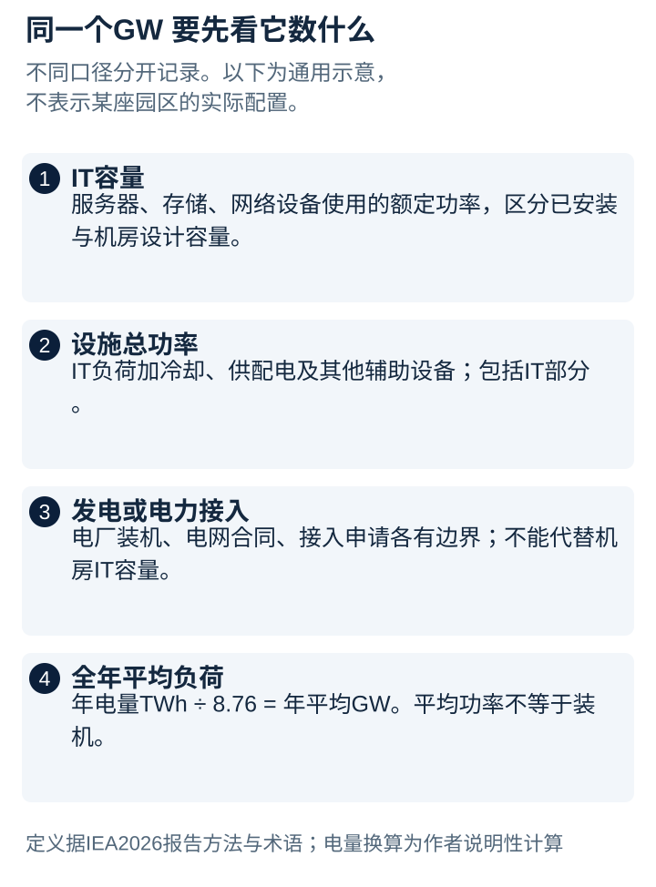
IEA的2026年报告给出了一个可以跨地区比较的起点：2025年，美国已安装IT容量估计39GW，中国（按IEA区域口径含香港）19GW，全球其他地区合计约24GW。加上设施辅助设备后，美国为52GW，中国28GW。这里的“已安装”来自设备存量模型，覆盖超大规模、托管与服务商、企业自建三类数据中心；它不是把每座园区最终可以摆满的机柜全部算进去。
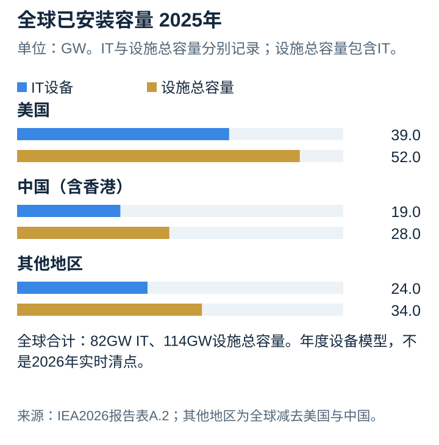
这套统计能回答“目前已经部署了多大规模”，但仍是2025年的年度估计，不能冒充2026年10月的逐座实时盘点。它也不表示这些设备每一刻都按额定功率运行。数据中心的装机容量、设备使用率和全年耗电量分别决定不同的问题。
电量尤其容易造成误会。假设一组设施全年消耗100TWh，除以8760小时，可以算出约11.4GW的平均用电负荷；这个结果不等于它装了11.4GW的设备。设备可能只在部分时段工作，设施也有空闲功耗和冗余配置。把年耗电量换算成平均功率后再标成“已投运容量”，会把读者带到另一本账上。
市场咨询机构还提供另一种视角：已经建成、可向客户提供服务的市场供给。Cushman & Wakefield的2026年上半年区域跟踪，覆盖的运营容量合计约77.5GW，在建约46.3GW，规划约321.2GW。这些数字由其美洲、亚太和欧洲中东非洲区域报告汇总后取一位小数，各报告的覆盖范围与原始精度并不完全一致，欧洲中东非洲的运营数原文为“超过12.1GW”。本文取得的公开摘要未完整界定这些市场容量的IT与设施输入边界，按原报告名称记录。它们适合观察开发规模，不能与IEA的设备存量拼成一个完整总盘。
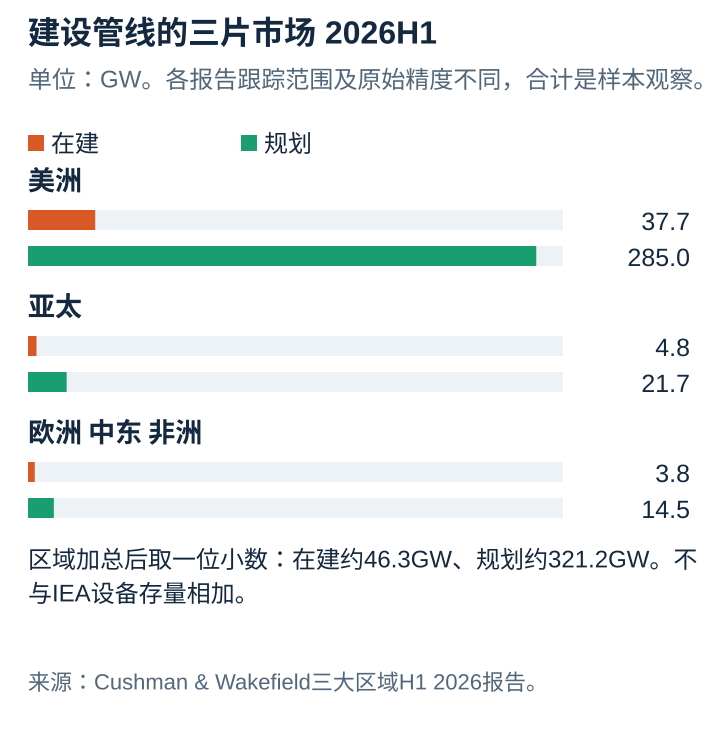
“在建”至少意味着项目已经进入施工阶段；“规划”通常包含尚未开始施工的后续容量。仍在讨论的方案可能只涉及土地、投资意向或电力申请，很多还没有稳定的容量边界。本文未找到可核验、可去重的全球讨论项目GW总数。这不代表讨论规模为零，也不代表现有规划统计覆盖完整；讨论项目可能与机构规划栏重叠，不能另行相加。能够确认的，是市场跟踪中已有数百GW的规划规模，以及规模更小、证据更具体的在建容量。
这些计划集中在原有枢纽和新的大型园区：美国继续向得克萨斯州、东南部和中西部扩展；东南亚由新加坡向柔佛、雅加达周边和曼谷周边展开；中国同时建设东部需求中心与西部算力枢纽。三片区域的统计制度和企业披露方式并不相同，接下来必须分别展开。
本文的项目表因此把“园区最终规划”“本期施工”“已经交付”和“实际使用”分开。建设方指主导开发的公司或项目业主，运营方指管理机房、提供服务的一方，使用方只填写公开披露的云厂商、模型公司或其他客户。总包施工单位没有可靠公开材料时留空，不把开发商自动当作施工承包商。
地址同样保留层级。企业公开街道和门牌的，可以定位到地址；只公布县、工业园或乡镇的，就停在这一层。云区域名称也不是机房地址。地图展示的是城市与区域分布，精确项目位置须以台账中的公开出处为准。
第二章 美国的扩建从旧枢纽走向大园区
美国已经拥有最大的设备存量，新一轮扩建又把项目推向了单园区数百MW、乃至GW级的规模。北弗吉尼亚依然是重要的机房集群，但大型AI园区的公开位置已经延伸到得克萨斯州、路易斯安那州、俄亥俄州、威斯康星州、密歇根州、新墨西哥州、北达科他州和怀俄明州。地图上的新点，代表不同的电力条件、土地安排与客户合同。
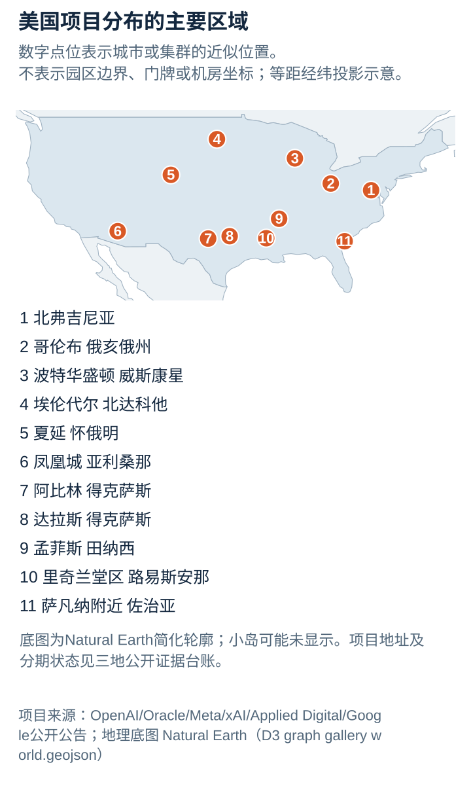
在北弗吉尼亚等成熟市场，既有运营商持续扩建，同时面对供电与交付时间的约束。CBRE的2026年上半年数据，只覆盖八个主要批发市场，库存为10.903GW，在建为7.4811GW。这是一组有明确分母的市场供给数据，不能拿它替代全美国，包括企业自建中心在内的规模也不止这一部分。
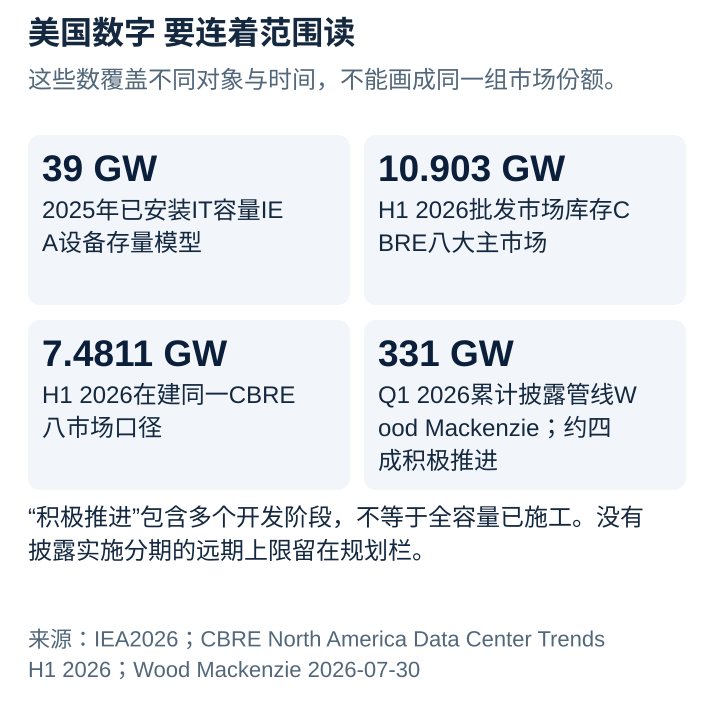
另一份更宽的统计来自JLL。其2025年末北美报告把自营和租赁设施纳入，给出运营容量39GW、在建35GW。这里既改变了设施范围，也包含加拿大，不能把35GW全部写成美国在建。不同来源的数值如果不带上地域和对象，读者会误以为同一市场忽大忽小。
规划端的数字更大。Wood Mackenzie在2026年7月发布的一季度跟踪，统计美国累计披露的数据中心容量达到331GW，其中约四成处于积极推进的开发状态。积极推进包含不同开发阶段，不能整批改写为正在施工。电力企业另行披露的签约或洽谈负荷，还可能与这些项目对应，同样不能再加一遍。
阿比林可以让这个差别看得更具体。Oracle在2026年9月的项目更新中披露，原有园区已经交付总容量的75%，剩余部分将继续分期交付。这个百分比本身有价值，但公开段落没有把分母解释成统一的IT容量。本文保留进展比例，不把它机械乘上其他公告中的园区总规模，制造一个看似精确的已投运MW数。
Oracle公开的另外几处建设地点也有明确交付预期：得州Shackelford County和新墨西哥州Doña Ana County计划在2027年上半年开始客户交付，威斯康星州Port Washington与密歇根州Saline Township预计在下半年开始。这些地点已经披露建设或施工进展，预期交付日期仍是未来安排。
更远的一层是佐治亚州Effingham County的Project Camellia。OpenAI在2026年7月宣布，与Georgia Power安排3.2GW供电，分期时间落在2028年至2032年；公开地点是Savannah Gateway Industrial Hub。公告同时说明，基础设施、分期、设计、融资和运营模式还需要进一步完成。它可以进入规划台账，3.2GW要保留为供电角度，不能写成已经装好服务器的容量。
同样位于一个国家，不同项目的状态已经相差数年。成熟托管市场的扩建、已经开始施工的AI园区、签了电力协议的远期园区，会同时出现在新闻里。只有把它们拆开，才能判断未来一两年的新增供给来自哪里，哪些还要等更长时间。
第三章 在美国 谁建园区 谁用算力
大型数据中心的公司名单越来越长，但名单本身不能说明项目归属。传统云厂商会自建，也会租赁第三方园区；开发商交付建筑和机电设施，云厂商安装设备，模型公司再购买算力。建设、运营和使用是不同层的角色，一座园区可能同时出现数家重要公司。
阿比林原有Stargate园区是这种合作的例子。Crusoe主导开发，Lancium参与土地与能源安排，Blue Owl和Primary提供相关融资，Oracle部署云基础设施，OpenAI是公开披露的使用方。园区公告中的1.2GW属于电力设计角度，不能直接变成已安装IT容量。每家公司的角色都重要，但这仍然是同一座园区。
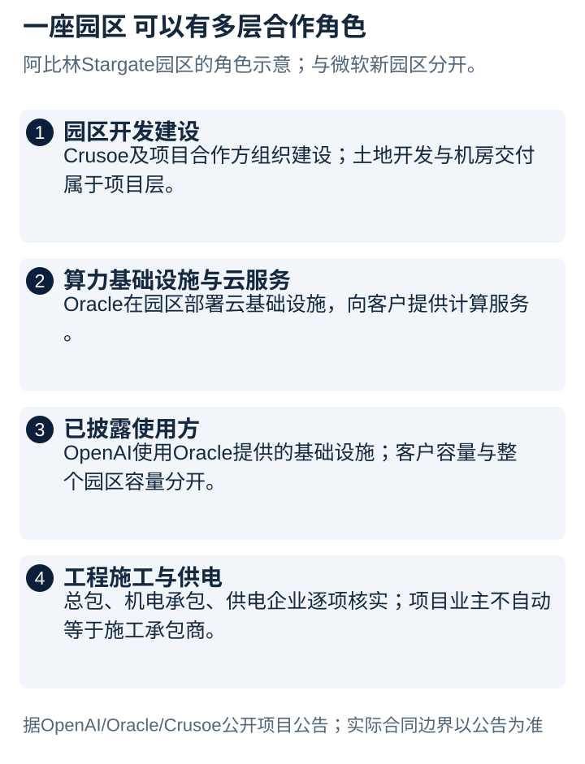
2026年宣布的微软新园区，则需要作为阿比林的另一个项目记录。它虽然由Crusoe开发，也坐落在同一城市，却披露了不同的客户和不同的设施方案。城市相同、开发商相同，都不足以证明它是原有Stargate园区的一个重复名称。
新墨西哥州Santa Teresa的Project Jupiter，由STACK和BorderPlex参与开发，Oracle租赁运营，OpenAI是公开使用方。最新方案披露的Bloom Energy燃料电池规模最高2.45GW，对应发电装机。本文所核公告没有给出整个园区统一的IT总量，因此台账保留发电数字与在建状态，不用发电装机补填IT栏。
Port Washington的Project Lighthouse由Vantage参与开发，披露的园区规模为902MW，Oracle提供云基础设施，OpenAI使用。密歇根州Saline Township的The Barn园区约1GW，由Related Digital主导开发、Blackstone参与融资、Walbridge承建，云服务和使用关系同样涉及Oracle与OpenAI。各自的电力配套规模另列，不与园区规模叠加。
除了Stargate体系，Meta在路易斯安那州Richland Parish的Hyperion扩展，远期计算容量目标达到5GW；俄亥俄州New Albany的Prometheus则公布了1GW AI集群目标。前者需要跨多年建设，后者本轮没有足够的一手材料证明整个目标容量已经投运。配套电源协议涉及其他地点和不同资源，不能全部记到某一座机房名下。
北达科他州Ellendale的Polaris Forge 1，由Applied Digital开发并向CoreWeave交付。公司2026年10月2日公告披露，已达到可提供服务状态的IT容量为250MW，而全园区已签约IT容量为400MW。这里已经可以把当前交付、客户合同与剩余分期分开。Harwood的Polaris Forge 2和路易斯安那州Alexandria的Delta Forge 1，也各有独立的园区和合同边界。
CoreWeave等GPU云也使用第三方开发设施。公开材料能够确认客户身份时，使用方栏写CoreWeave；没有点名最终客户的项目，运营商即使列出了“超大规模云客户”也不能由研究者猜成某家云公司。Google、Microsoft、AWS或Meta在一个州增加投资，并不证明该州每座新建托管园区都由它们租用。
传统托管与园区运营商仍然是美国扩建的重要参与者。Digital Realty、Equinix、QTS、Vantage、STACK、CyrusOne、DataBank、Aligned和T5等公司承担不同市场的建设与运营。它们既有企业客户，也有云和AI客户；从公司级总规划追到具体城市、楼宇和分期，才能把这些主体放回项目地图。
所以美国附表同时记录公司组合与单个园区，但不把两个层级加总。组合数据说明企业的整体开发能力，园区数据说明具体在哪里建设，两者之间需要建立归属关系。一个项目从开发商租给云厂商，再服务模型公司，仍然只有一座设施，不能因为出现三家公司就记录三份容量。
第四章 东南亚从新加坡向周边展开
东南亚的扩建并不是每个国家按同样速度增长。新加坡有成熟的网络与客户基础，柔佛拥有大园区扩展空间，雅加达都市圈服务印尼国内需求，巴淡靠近新加坡，曼谷周边则形成另一条工业园建设走廊。地图上的几片集群，比一个笼统的“东南亚总量”更能说明项目为什么落在那里。
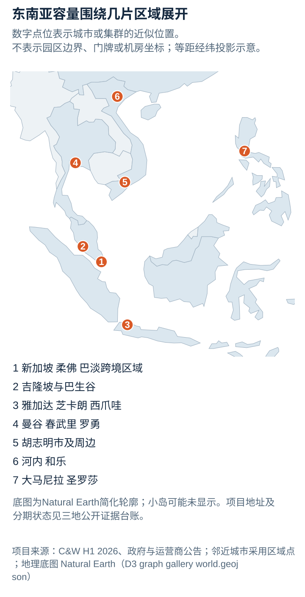
Cushman & Wakefield的2026年上半年快照覆盖新加坡、马来西亚、印尼、泰国、越南和菲律宾六个主要市场，运营容量合计3.173GW，在建2.381GW，规划7.558GW。它们是原报告的市场跟踪容量，本文取得的资料未完整界定全表的IT与设施输入角度，适合比较建设阶段；其他东南亚国家没有因此被记成零，六国之外的企业自用机房也没有被这组数完整覆盖。
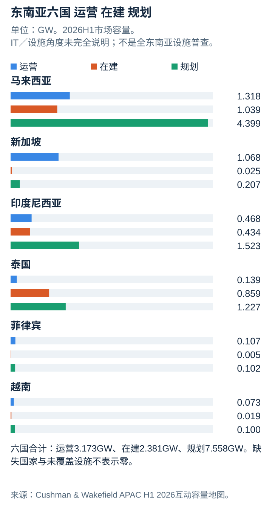
在这张快照里，马来西亚拥有最大的运营与规划规模，主要增量集中在柔佛。新加坡的运营存量仍然很大，但H1快照中在建容量较小。到2026年8月，第二轮数据中心配额又暂分配了200MW，Digital Realty、Equinix、Keppel和STTGDC各获得50MW。新审批发生在半年快照之后，不能倒填进H1在建数字。
新加坡政府另在2026年2月披露，全国有超过70座数据中心、合计容量超过1.4GW。它覆盖云、企业和托管设施，答复没有明确把IT与设施电力拆开，台账保留原始口径。Tuas、Jurong和Loyang是主要项目位置之一，Singtel旗下Nxera的DC Tuas于当月开业，披露58MW IT容量，终端客户名单没有公开。
柔佛的建设沿Sedenak—Kulai，以及Iskandar Puteri—Nusajaya—Gelang Patah两条区域展开。H1城市统计中，运营容量为1.110GW，在建0.602GW，另有2.486GW规划。城市总量已经包含在马来西亚国别数据中，读到园区表时不再重复加总。
企业最新披露则让这幅图更具体。DayOne截至2026年9月20日的柔佛资产，有789MW IT已具备服务条件，616MW IT在建，另有对应208MW IT的带电土地。这是比H1更晚的企业快照。“具备服务条件”意味着机房可以交付服务，与已经装好、实际运行的服务器功率仍有区别。
柔佛也聚集了越来越多开发与运营主体。AirTrunk的JHB1设计超过150MW IT，初始交付超过50MW；相邻JHB2设计超过270MW IT。Bridge Data Centres的MY06当前园区规划为508MW IT，公开的首期锚定客户是ByteDance。TM与Singtel Nxera合作的园区，则同时出现一期64MW、远期200MW IT和TNB的280MW供电合同。不同角度都进入记录，项目分期和基础设施配套分别说明。
印尼有两条主要路径。雅加达向Bekasi、Cibitung、Cikarang和Karawang延伸，形成靠近国内客户的工业园机房走廊；Batam与Bintan则与新加坡周边区域市场联系紧密。DCI的H1园区位于MM2100工业区，当前披露75MW IT和五栋运营机房，JK6的36MW包含在园区数内。
Batam的DayOne截至2026年9月披露72MW IT具备服务条件、240MW IT在建，以及对应120MW IT的带电土地。西爪哇Jatiluhur的BDx扩建则在9月开工，分期设计640MW IT、首栋120MW，供电安排另披露845MVA。MVA描述视在功率，没有公开功率因数时保留原单位；它不是可以直接加入IT MW的一笔新增容量。
泰国项目由曼谷延伸到Samut Prakan、Chonburi与Rayong。STT Bangkok 1已经运营，披露23MW IT；Gulf、AIS与Singtel的GSA01也已投入服务，披露25.6MW服务容量。GSA02设计38.1MW、目标2027年第一季度服务。2026年9月至10月的监管调整使部分项目的最新施工状态需要继续核实，台账保留具体项目的最后证据日期。
越南同时发展设施电力和IT园区规划。Viettel在河内Hoa Lac 3披露30MW总电力与2400个机架；胡志明市Cu Chi的Tan Phu Trung于2025年开工，远期设计140MW总电力、约一万个机架。两个项目没有完整的IT对应值，基础设施数字仍然有助于判断工程规模。
Saigon Hi-Tech Park的新项目又提供了不同角度：Evolution VN02在Lot T8设计52MW IT，2026年取得许可并交地；StarMason的Lot T9获批60MW IT，可扩至90MW，由Sembcorp Development与BB Holdings合作。它们的许可、地块和设计能力可以核验，施工分期则要按后续资料更新。
菲律宾主要项目围绕Metro Manila以及Laguna等周边地区展开。VITRO Santa Rosa于2025年正式开业，设施电力为50MW，产品册另给出36MW IT设计；Toyota Motor Philippines是公开确认的托管客户。Quezon City的STT Fairview首栋设计28MW IT，最终四栋园区为124MW IT。运营商、建设合作方和客户的公开信息，让这些项目有了可以继续追踪的具体位置与归属。
第五章 中国的大园区在哪儿 怎样数清它们
中国的布局有两条同时展开的线。一条围绕北京、上海、广州和深圳等需求中心，服务云、互联网与企业用户；另一条向内蒙古、宁夏、甘肃和贵州等枢纽发展，承接对能源、土地和规模更敏感的计算任务。把它们理解为一批彼此替代的机房，会忽略时延、网络位置与客户接入的差异。西部形成大园区，沿海需求中心仍然需要持续更新。
“东数西算”明确了八个国家枢纽节点和十个数据中心集群。十个集群分别是张家口、长三角生态绿色一体化发展示范区、芜湖、韶关、天府、重庆、和林格尔、贵安、庆阳和中卫。内蒙古枢纽之下，乌兰察布也是重要的企业项目集聚地，但不能把它替代政策文件中的和林格尔集群。这张地图说明政策与工程落点，不能直接证明每一处都已有相同的GW规模。
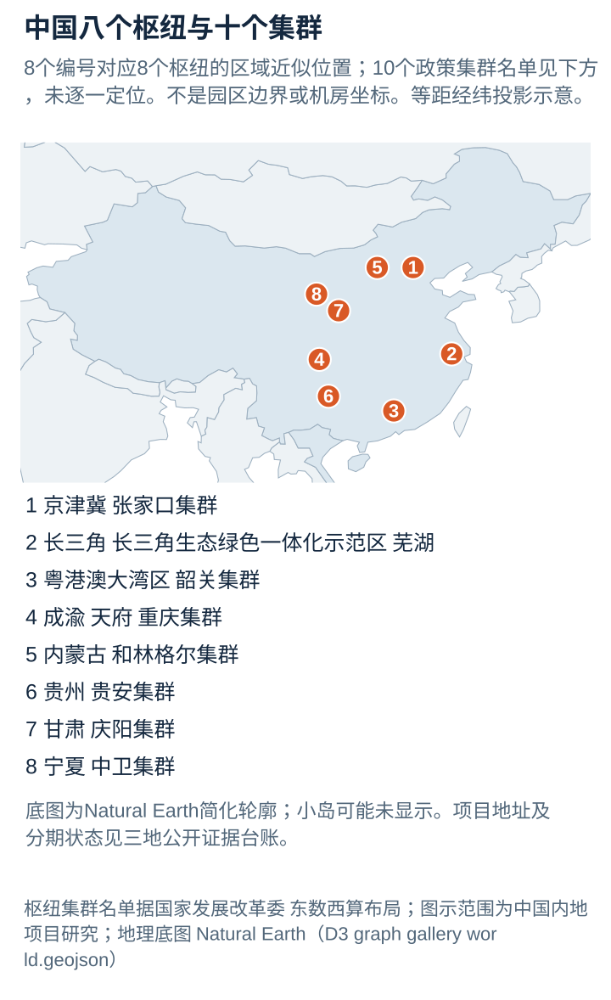
全国容量仍然要先交代边界。IEA估计2025年中国含香港安装IT容量19GW、设施总容量28GW，采用与全球82GW和114GW一致的设备存量模型。Rystad在2026年4月发布的另一项研究则估计2025年底中国已安装容量32GW，预测2026年底达到40GW，并列出28GW已宣布、预计2030年前上线的项目管线。新闻稿没有完整交代IT与设施容量边界；32GW、预测40GW和宣布28GW都可以保留，但不能与IEA求平均，也不能把预测40GW当成截至10月已经落地的容量。
工信部2026年9月发布的材料提供了另一组全国指标：截至2025年底，在用算力设施超过1373万标准机架，全年用电量约1700亿千瓦时。这些数字有助于观察基础设施规模和能源需求，仍然不能直接替代全国已安装IT的GW。国家数据局有关监测采用2.5kW标准机架，企业自定义机架又可能采用5kW等标准；先把所有“柜”当成相同物理机架，再乘一个统一功率，会引入新的误差。170TWh除以全年小时数得到的约19.4GW，也只是年平均电力需求。
企业披露能让图景进一步落到实际资产。世纪互联截至2026年6月底批发业务投运1007MW、在建585MW，利用容量744MW；零售业务另有50081个机柜，不能不加说明地折入批发MW。秦淮官网2026年第三季度披露投运规模860MW、在建660MW、规划IT容量超过8GW；前两项原文只称“规模”，本文保留这一边界。润泽半年报披露750MW交付投运，内地七个园区远期规划5.4GW；规划总盘子是否含既有容量，要按具体园区拆分后判断。数据港同期投运36个数据中心、合计401MW。它们都是真实的企业容量观察点，但业务范围、披露时间与容量定义尚不完全一致。
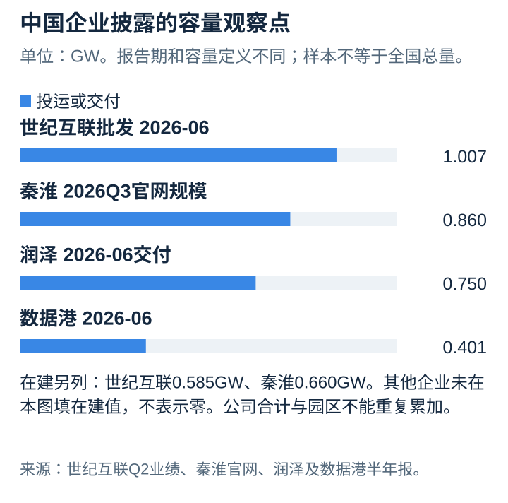
这些数字不能机械相加成为“中国新增总量”。公司合计里面已经包含园区，园区再包含楼栋；一个园区可以同时有投运、在建与尚未开工的远期部分。万国数据在半年业绩中主要披露运营面积、在建面积和利用率，光环新网披露机柜数量。如果原文没有MW，记录面积与机柜同样有价值，进一步折算则需要企业自己的功率信息。截至本文截点，未找到官方全国统一、逐项目去重、以GW分别列出在建和规划的完整清单。
看环首都，可以从秦淮的山西大同灵丘太行山基地开始。2025年1月公告披露投运IT容量超过300MW，全园十三期最终超过500MW；后续资料确认2025年上半年已有一至九期投运。园区名、地理位置与开发运营主体可以确认，两个容量数字对应不同阶段。它服务的核心客户不能凭“互联网数据中心”这一描述补写成某一家云厂商，未实名公开时应继续留空。
内蒙古的企业项目也要拆开资源与交付。2026年8月地方报道介绍乌兰察布世纪互联一期、二期已交付，三期在建，并列出“现有IT负荷1.3GW”、全园规划3GW、远期10GW。报道没有完整拆出1.3GW中各分期的投运份额，因此本文保留原文，不将其直接写成全部在役设备容量。同地中金数据零碳基地于2025年7月投产，其配套300MW风光电和45MW储能属于能源系统，不能相加为345MW数据中心IT容量。储能MW也不是储存电量MWh。
中卫则有较清楚的IT承载容量。国家能源局西北监管局2026年6月介绍，中国移动中卫数据中心已建成十二栋机房，IT总功率332MW，其中B区202MW。202MW已在332MW之内，不应再次累加。对这类项目，“已建成可承载的IT功率”也不能自动升级成服务器已全部安装、业务全部满载。
同一城市的扩张计划另列。秦淮2025年8月与中卫政府签署框架，拟建设三座零碳智算园区，最终IT容量1.2GW。签约与终局容量足以把它放进规划台账，不能单凭框架协议把三座园区全部标为在建。AWS中国宁夏区域同样位于中卫，由宁夏西云数据科技有限公司运营。AWS是技术与服务品牌，西云数据是本地运营主体，开发资产与终端租户仍须依据各自披露填写。运营公司的办公联系地址也不等于机房街址。
庆阳的中国能建中电工程园区展示了分期如何进入存量。A1已有运营，A2于2026年5月29日正式投产；A4目标2026年底投运，A3目标2027年6月投运。把整园一次归入运营或一次归入规划，都没有这组楼栋时间表准确。当地截至2026年3月“建成及在建二十二个中心”等合计指标，也应保留“建成及在建”这个原始集合。
芜湖同时接近长三角需求中心，并形成较大的工程储备。经开区2026年9月30日披露，城东片区在建抖音一期、电信等项目合计IT负荷780MW，在谈储备IT负荷1.7GW。两项有相同地域、明确的IT角度和不同阶段，是少见的可直接并列观察点。780MW包含多个项目，不能全部归给抖音；1.7GW保留为在谈，尚不能当成已开工。
香港另列，避免内地企业园区表悄悄改变地域范围。沙岭项目公开地块为新界北区丈量约份第89约地段第953号，开发法人香港润江智算科技有限公司，最终控股方为润泽，另有森谷工香港参与，中电提供电力配套。2026年3月动工后，9月政府公告将首阶段目标提前至2027年，并披露远期算力目标。最新时间表应覆盖此前较早的目标，但PFLOPS仍保留为算力，不能凭未经披露的服务器配置折成GW。
第六章 从宣布到交付 还有多少距离
美国、东南亚和中国共同呈现出一个事实：扩建项目的容量越来越大，真正可比较的数量却取决于边界。美国的全国设备存量、商业托管市场与数百GW宣布管线分别回答不同问题；东南亚的六国快照适合比较区域运营、施工与规划的分布；中国的全国模型、企业组合与地方工程披露需要相互校验。它们能够组成一幅有层次的地图，暂时不能组成一张口径完全统一的全球项目总表。
判断一个新园区，应沿着公开进度继续追踪。可研或备忘录说明各方愿意讨论；用地和许可把地点进一步固定；电力协议说明供电安排取得进展；实际土建和设备安装才支持在建判断；通电证明供电环节达到里程碑，交付与ready-for-service则需要结合具体公告确认可提供服务的范围；服务器上架和业务运行则是更靠近真实算力的证据。不同机构对“在建”与“投运”的分类可能不同，台账需要保留原始状态，而不是替所有项目改成一套更乐观的称呼。
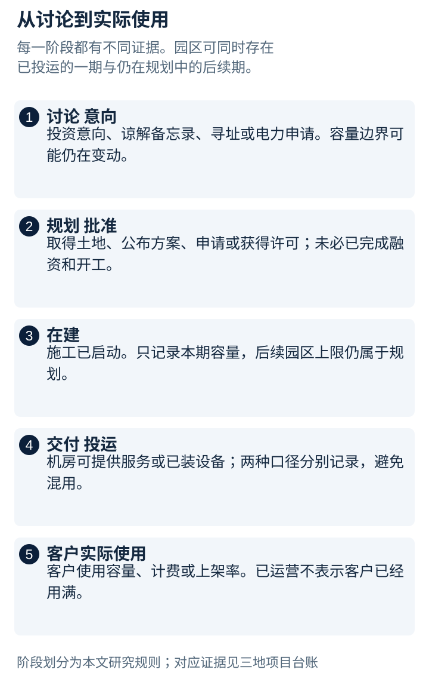
美国几项新增合同说明了这种区分的用途。Hut 8在路易斯安那州River Bend披露245MW IT合同与330MW电网容量，Fluidstack承担服务、Anthropic是实名使用方，Google提供信用支持；首批交付目标为2027年第二季度。三个品牌同时出现，不代表三个品牌都是机房用户，也不代表合同覆盖容量已经全部投运。IREN在得州Childress的Horizon 1于2026年8月由Microsoft接受首期50MW IT，该合同四期合计200MW IT，已接受的50MW包含在其中，其余分期还需要继续按阶段记录。一个具体的验收事件，比笼统的“扩建中”更接近已交付事实。
建设主体同样需要细分。土地与园区开发、机房资产持有、土建承包、电力开发、云平台运营和最终模型使用可能由六组不同公司承担。租赁型云基础设施尤其如此。把Oracle、Crusoe、OpenAI与园区融资方都标成“建设者”，会失去项目责任链；看到Google提供担保就把它标成终端用户，也会改变合同含义。主体角色不明确时，记录已公开的一层，比补齐一个看似完整的故事更准确。
地点也有明确的可信度差异。城市、工业园、公开地块、街址是一层层更具体的证据。中国香港沙岭地段、胡志明市高科技园Lot T8与Lot T9、菲律宾Fairview所在地能支持较精确的定位；不少美国GW级项目只公开县域与园区名称。本文图上的点是城市或集群示意，精确到哪里取决于来源。办公室、签约会场和运营公司的注册地址不会被自动当成数据中心地址。
此次项目附录共列168条项目及设施记录：美国47条、东南亚69条、中国52条，其中中国附录包含香港1条。这个数表示公开研究覆盖的记录量，包含园区、分期与部分区域设施，不能当成世界数据中心总数。东南亚的容量总表覆盖六大市场；柬埔寨、文莱、老挝、缅甸及东帝汶另有可核实项目、可研或政府托管设施，公开容量与进度不足时，在附录保留原始线索，不混入六国GW合计。
因此，对“现在有多少、还准备建多少”可以给出分层答案。2025年全球已安装IT容量82GW、设施总容量114GW，是目前本文核验到的统一全球年度模型基线。2026年上半年Cushman & Wakefield三大区域报告合并后的跟踪样本，在建约46.3GW、规划约321.2GW，展示了很大的项目储备，地域样本与容量边界仍需保留。对更早期、仅在讨论的全球管线，本文尚未找到可核验、可去重的完整总数，未知不能记成零。
后续最值得更新的节点很具体：新园区是否真正取得电力接入与施工许可；宣布的远期总量中有多少完成首次交付；已交付机房有多少转成利用容量；客户、开发商与供电方的公告是否指向同一园区同一期。随着这些证据逐项出现，规划GW会有一部分转成在建，再有一部分转成可以运行的机房。保留容量角度、地点、主体和日期，才能看见这个转化过程，而不只是看见更大的新闻数字。
数字口径与资料来源
资料截止日为2026年10月11日。年度存量采用2025年数据，市场管线主要采用2026年上半年快照，具体项目以最近可核验公告为准；不同日期没有被重写成同一天。IT设备功率、IT设计承载容量、设施输入、并网能力、发电容量及年度耗电分别记录。机构原文未界定角度的数字保留原始名称，不估算缺失值。
| 地域与来源 | 时间和范围 | 已安装或运营 | 在建／规划或宣布 |
|---|---|---|---|
| 全球，IEA | 2025年年度在役设备模型 | IT 82GW；设施总容量114GW | 该表不提供项目管线 |
| 美国，IEA | 2025年年度设备模型 | IT 39GW；设施52GW | 不与项目市场统计混算 |
| 全球三大区域，Cushman & Wakefield | 2026H1区域跟踪容量，IT／设施角度未完全说明；合计取一位小数 | 运营约77.5GW，样本与原始精度有差异 | 在建约46.3GW；规划约321.2GW |
| 美国八个主要市场，CBRE | 2026H1批发托管市场 | 10.903GW | 在建7.4811GW |
| 东南亚六国，Cushman & Wakefield | 2026H1六个市场跟踪容量，IT／设施角度未完全说明 | 3.173GW | 在建2.381GW；规划7.558GW |
| 中国含香港，IEA | 2025年年度设备模型 | IT 19GW；设施28GW | 该表不提供项目管线 |
| 中国，Rystad | 2026年4月研究，IT／设施边界未完全说明 | 2025年底估计32GW | 2026年底40GW为预测；宣布管线28GW，预计2030年前上线 |
表内是不同问题的答案，不能跨行相加。中国商业市场的Cushman & Wakefield样本、各企业组合、地方聚合与全国模型另见中国附录。
主要宏观来源：
- IEA《Key Questions on Energy and AI》，2026年4月。容量表见PDF附表A.2、印刷页109；设备和总容量定义及方法见相关附录。
- Cushman & Wakefield亚太市场容量地图。东南亚六国及中国商业市场容量保留市场跟踪范围。
- JLL North America Year-End 2025。地域为北美，不能直接标成美国全国。
- Wood Mackenzie关于2026Q1美国宣布管线的研究。宣布331GW，不等于331GW已进入施工。
- 地图底图采用Natural Earth GeoJSON，按经纬度近似投影绘制；项目点示意城市或区域，不提供机房级坐标。
逐项目的位置、容量角度、开发与施工、运营、实名客户、分期状态和来源日期，保存在三份配套台账中。未公开的地址或客户明确留空；公司办公地址、签约地址与推测客户不作为项目事实。附录保留不同来源冲突及早期时间表，不把交付目标自动升级为投产。